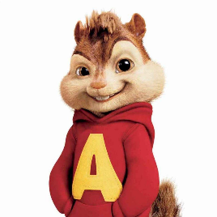

Garfunko Family News
The Death of Alvin and the Chipmunks
D21-GY3
Ian of Dains
 Alvin and the Chipmunks have been found dead in their father David Seville's house yesterday. Law enforcement have ruled their deaths as an apparent suicide to the disbelief of fans around the world. Law enforcement has told the Garfunko Family News that the Chipmunks killed themselves at eight last night by hanging themselves via nooses from their ceiling fans in their bedroom. David Seville told GFN reporters that he found the deceased Chipmunks aproximately an hour and a half after their death.
As for the reason for the apparent suicide, David Seville told a GFN reporter that "The little guys couldn't handle the pressure of fame and decided to leave this world...They are with Garfunkel now." Alvin and the Chipmunks had been on rodent anti-depressants and had been known to appear drunk on stage, on one occasion even vomiting into the crowd. The Chipmunks spent their last hours on their computer masturbating to Loud House hentai on Rule 34, according to law enforcement.
The fans of the Chipmunks mourned this morning, holding memorials which were later attacked by BLM protestors. Some fans began creating theories about the circumstances of the deaths such as that they were murdered by the CIA, or that they had been murdered by their father, David Seville. Law enforcement have denied these rumors and have stated that they plan to investigate the cause of death, but that it was likely nothing more than a suicide. The Chipmunks will be joining Garfunkel, Terry Davis, and Scatman John in heaven.